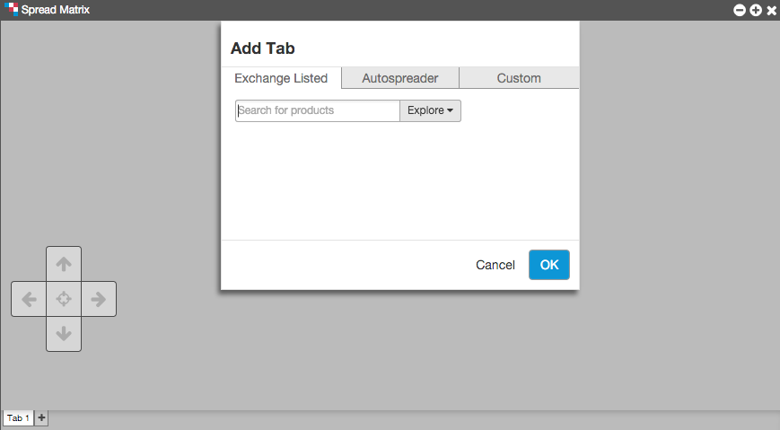
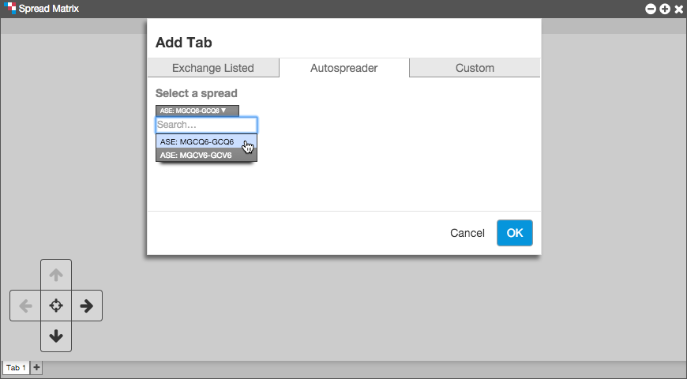
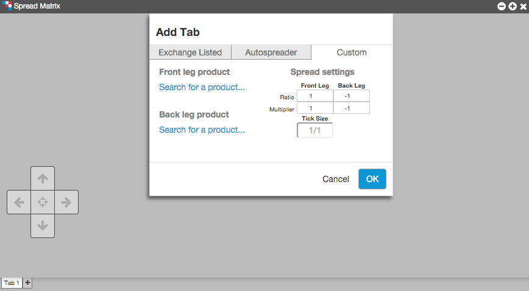

Use the Exchange-listed tab to open a spread matrix for an exchange-listed calendar spread.
- Open the Spread Matrix widget.
- Click the Exchange-listed tab in the Add Tab dialogue.

- Enter a product in the Search for products box or click Explore to select a single product.
- Click Ok.
Opening an inter-product Spread Matrix
Use the Autospreader tab to open an existing inter-product spread that is managed by the Autospreader® widget. This includes any inter-product spreads you've created using the Spread Matrix.
- Open the Spread Matrix widget.
- Click the Autospreader tab in the Add Tab dialogue.

- Click the dropdown arrow in the Select a spread field and click on a spread.
Note: The Autospreader tab only displays synthetic inter-product spreads. If there are no inter-product spreads created in Autospreader®, this dropdown will be empty.
- click OK.
Opening a custom inter-product Spread Matrix
To populate a Spread Matrix with two different products when there is not an existing Autospreader spread comprised of legs of the two different products, use the Custom tab.
- Open the Spread Matrix widget.
- Click the Custom tab from the Add Tab dialogue.

- Click Search for a product... in the Front leg product and Back leg product fields to select products for the front and back legs of the spread.
- Configure the following settings in the Spread Settings table:
- Ratio — Indicates the quantity of each leg in relation to the others. A negative sign (-) before the number indicates a short leg. Values entered in the Ratio field do not affect the spread price.
- Multiplier — Weights the value of the leg price to calculate the spread price when using the "Price Differential" formula:
(1 * Leg1.MergedPrice) - (1 * Leg2.MergedPrice)
Note: The multiplier can be a whole number, decimal number, or fraction. Fractional representation optimizes ticking accuracy.
Example: A Spread Multiplier of 0.333333 displays as 1/3 in the
Tick Information section.
Click Ok.
The custom spread is launched in Spread Matrix.